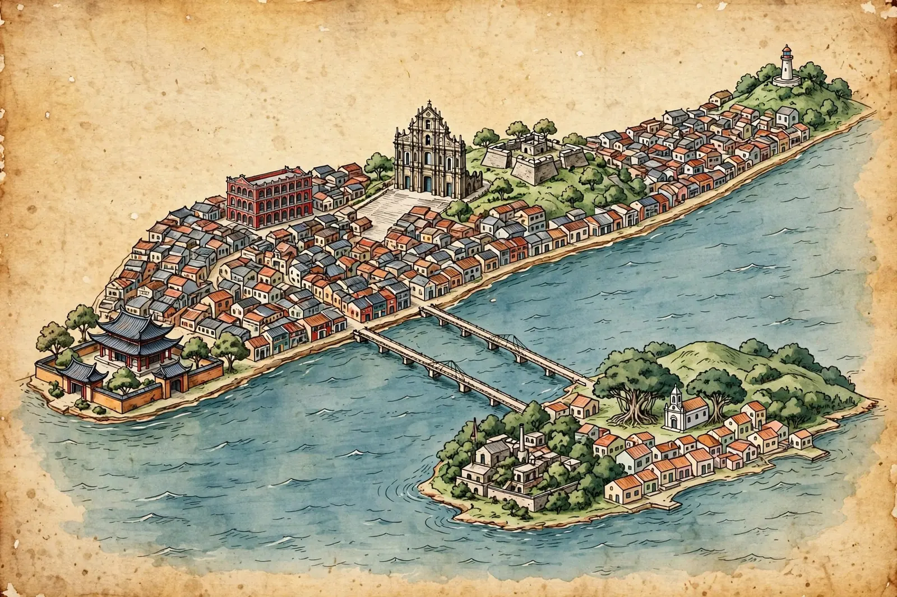
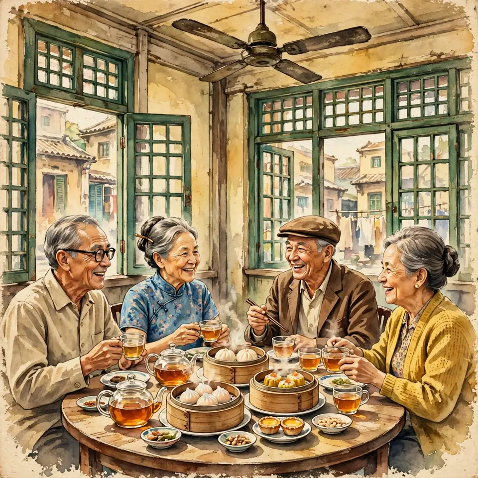
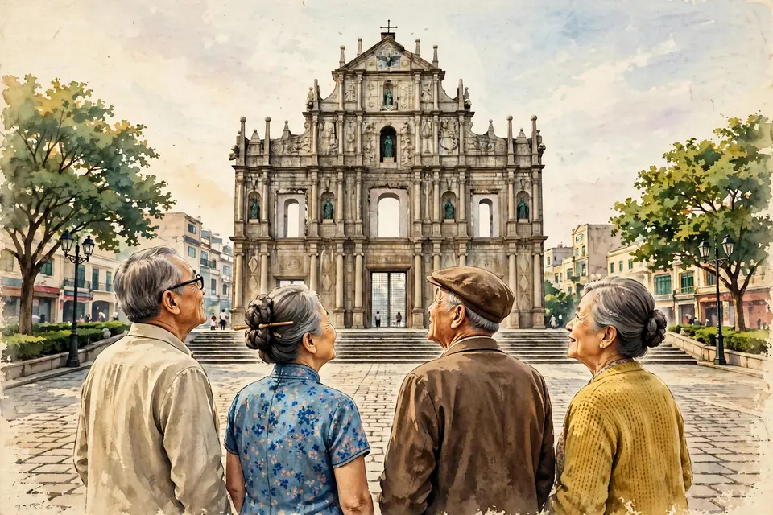
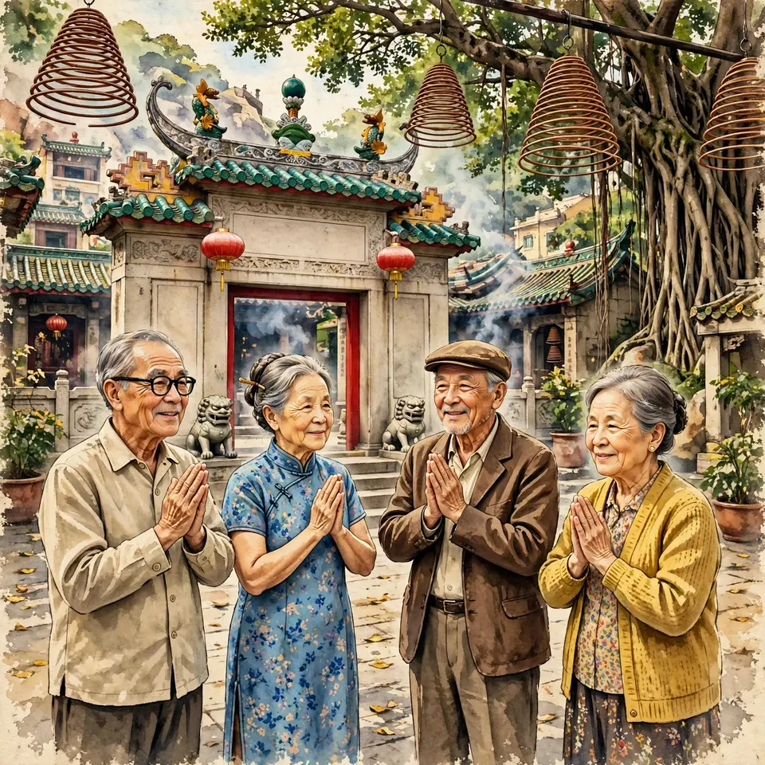
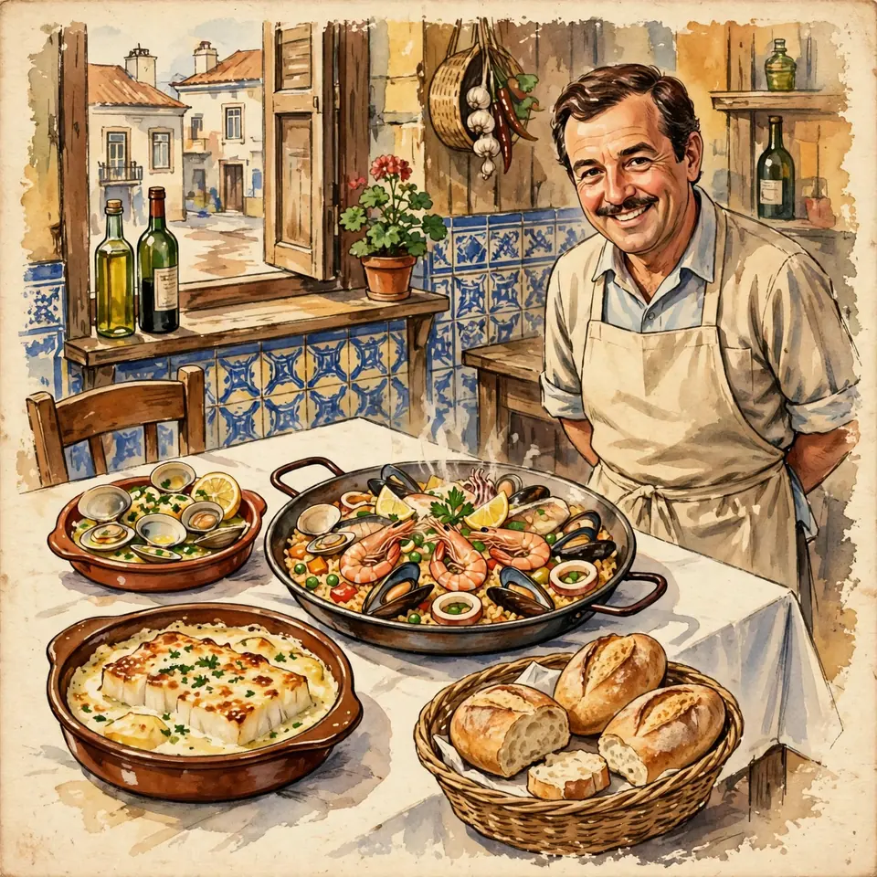
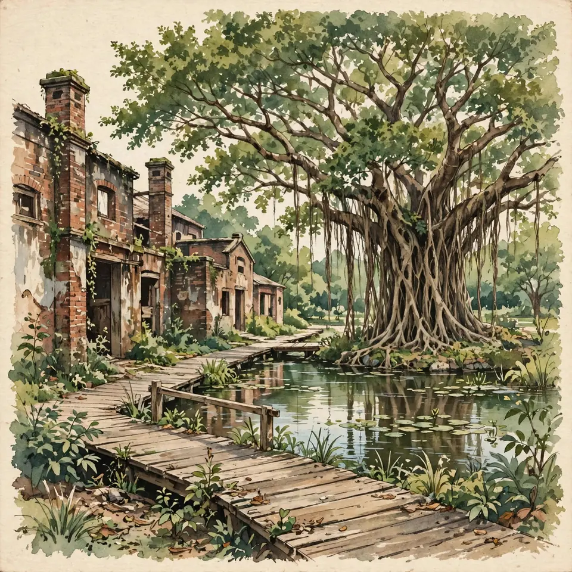
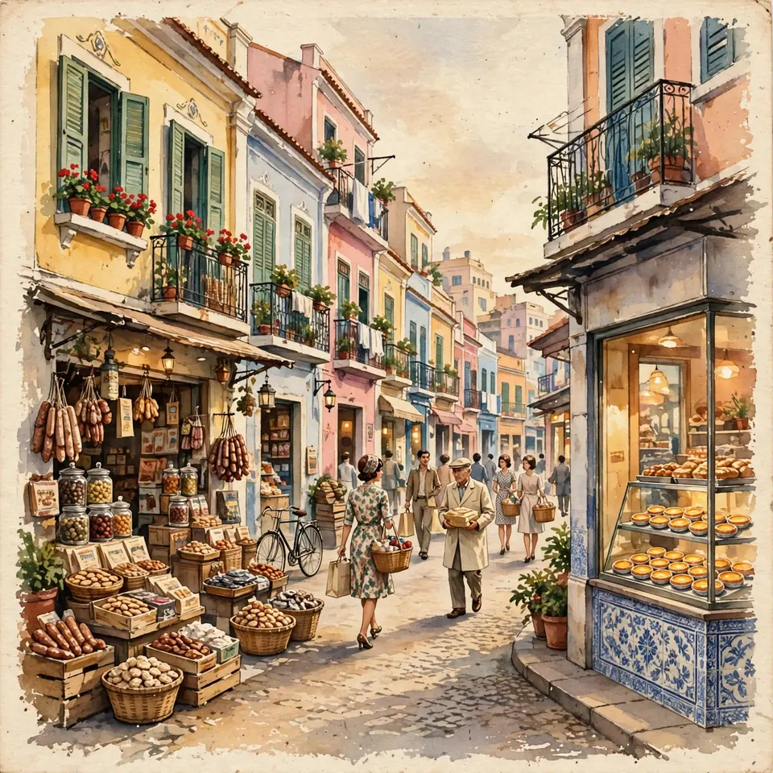

旅行手札・澳門 MACAU
2026年11月16日（星期一）
包車由香港直達・點對點停站上落・慢慢行・唔使趕

撳地圖上嘅數字釘睇站點介紹；喺站點卡撳「喺地圖睇」就會跳返上地圖。
半島・紅街市附近

1962 年開嘅老字號茶樓，推車仔點心、點心紙自己拎，係老澳門嘅早茶味道。包車朝早由香港直達澳門，約九點到埗，嚟到第一站就係呢度，唔使轉車。
小貼士茶樓喺二樓，要行一條樓梯先上到去，冇電梯，兩位長輩慢慢行就得；只開到下晝 2 點，所以排第一站，蒸籠點心即拎即食。
半島・老城區

澳門嘅標誌，聖保祿教堂剩返落嚟嘅石砌前壁，巴洛克雕刻混埋東方圖案，企喺廣場抬頭望已經好震撼。
小貼士只喺廣場平地睇就夠，唔使行樓梯上炮台；星期一戶外照開，冇休館問題。
半島・媽閣

澳門最古老嘅廟宇之一，「澳門」個名就係源自呢度嘅媽閣。香火鼎盛，入去上炷香、祈個福，感受老澳門嘅氣息。
小貼士包車喺廟門口落車，正殿就喺地面層，唔使點行樓梯；睇正殿同塔香已經好夠。
氹仔

1992 年開嘅家庭式葡國菜，葡萄牙老闆兼大廚。焗鴨飯、海鮮飯、檸檬炒蜆、忌廉焗馬介休都係招牌。
小貼士12 點開門，準時入座；訂位電話 2882 7571。
氹仔

澳門以前係炮竹業重鎮，呢度係唯一保存落嚟嘅百年廠址，而家係綠樹成蔭嘅舊址公園，遊客極少。
小貼士平坦木板步道，樹蔭多，當飯後散步一流；免費入場。
氹仔

短短一條葡式小街，買手信、食安德魯蛋撻，色彩繽紛，唔使趕。
小貼士買完手信 14:20 上返同一架包車，經港珠澳大橋直返香港，唔使落車轉車；預計 15:00 左右離開澳門，時間好鬆動。